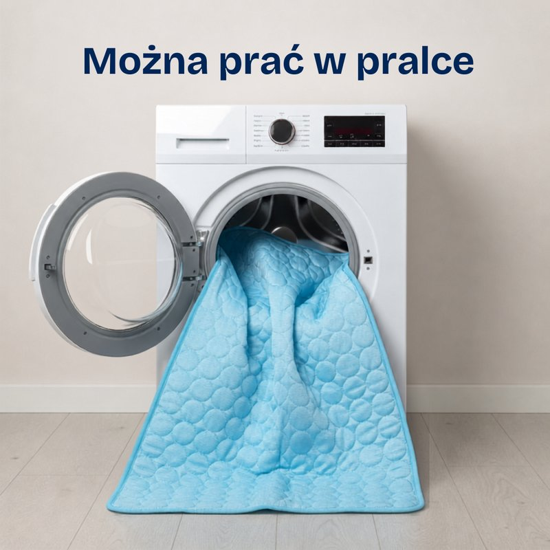
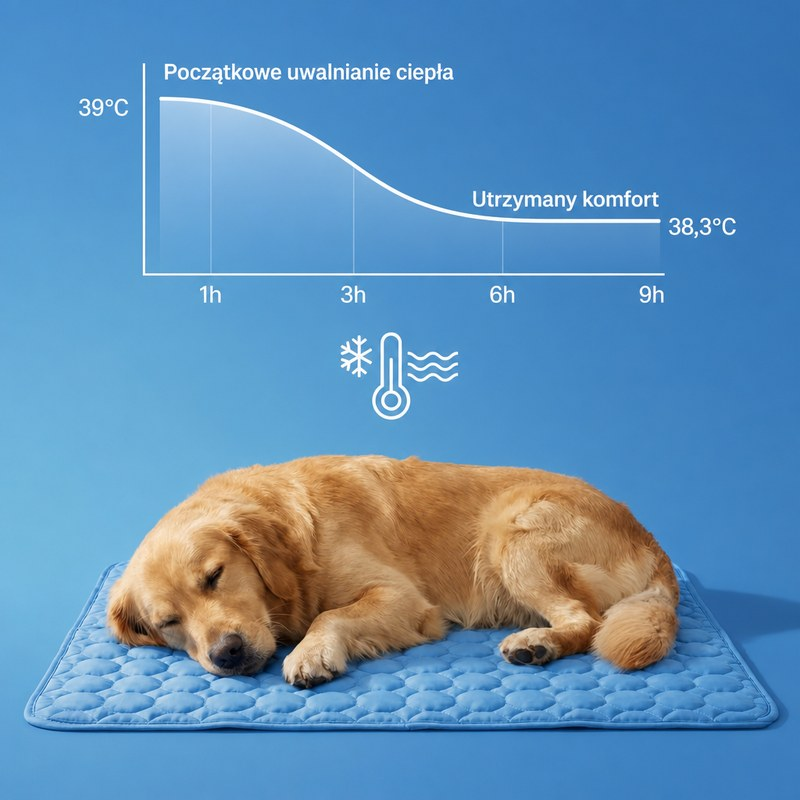
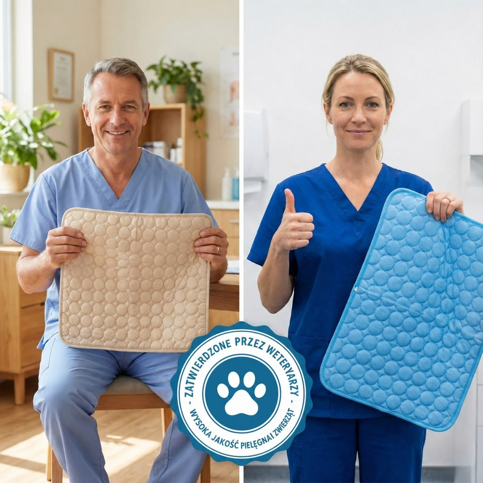
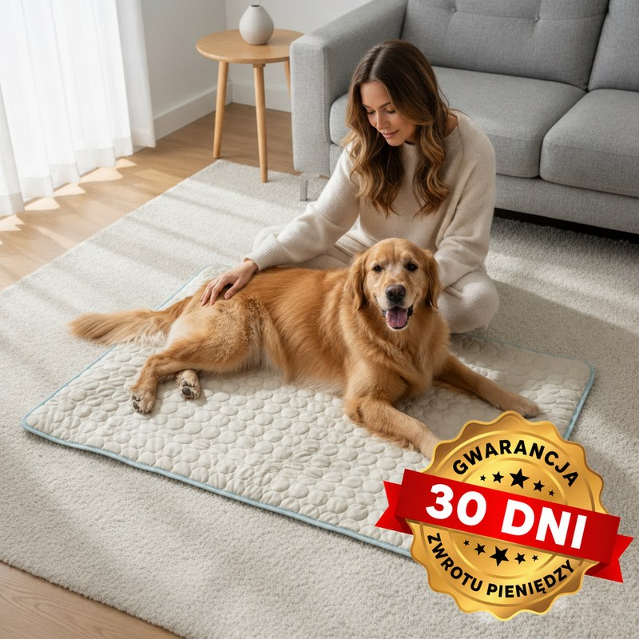
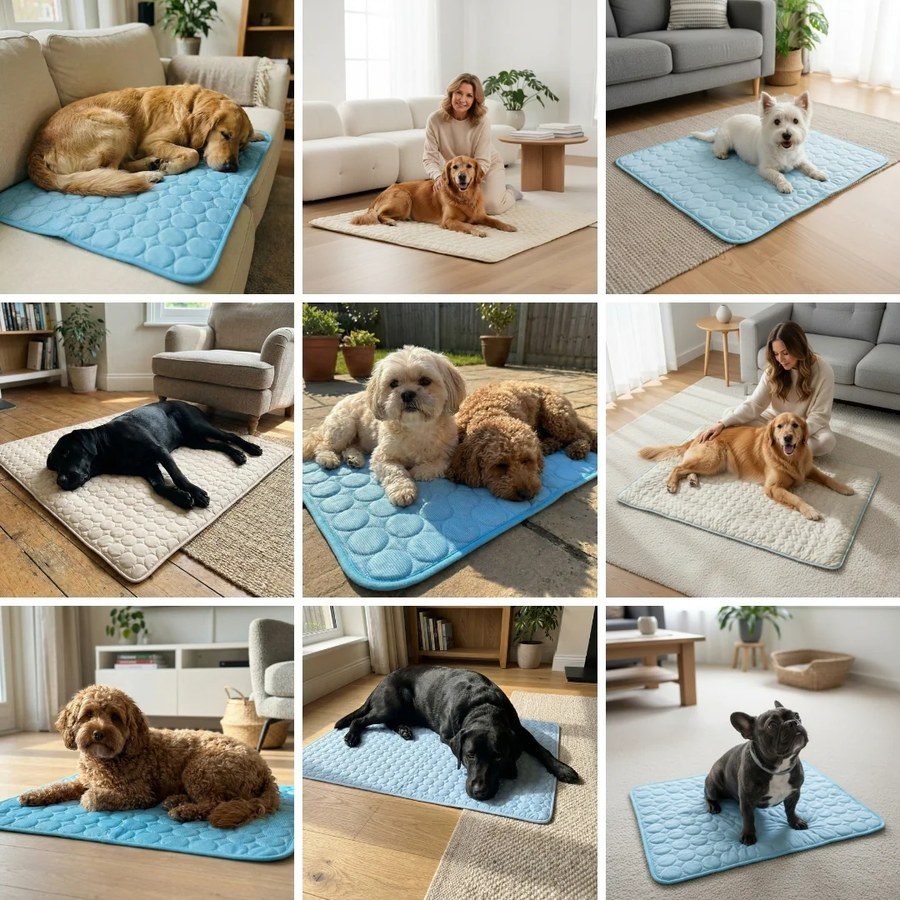

10 powodów, dla których tysiące właścicieli psów zachwala tę matę chłodzącą, która wreszcie zapewnia ich psom chłód, spokój i komfort
Jeśli kiedykolwiek patrzyłaś, jak Twój pies dyszy bez końca, wierci się i wyraźnie cierpi w upale, to zrozumiesz, dlaczego tysiące właścicieli psów mówi o tej macie chłodzącej, że jest prawdziwym ratunkiem.
1. Spokój ducha, gdy nie możesz przy nim być
Materiał maty Kojo odbiera nadmiar ciepła z ciała psa, dzięki czemu może on odpoczywać w komfortowej temperaturze nawet wtedy, gdy nie ma Cię w domu. Pomaga psu pozostać spokojnym i wygodnie ułożonym — a Tobie daje prawdziwy spokój ducha.
„Wracałam do domu i zastawałam psa zdyszanego i niespokojnego. Od kiedy ma matę, jest spokojny, zadowolony i wreszcie wygodnie mu w upalne dni. To ogromna ulga wiedzieć, że wszystko z nim w porządku." — Emilia R.
2. Chroni Twojego psa przed męczącym upałem
W skwarne dni upał uderza w psy szybko — prowadzi do wyczerpania i skrajnego zmęczenia. Dla właściciela patrzenie na to jest rozdzierające.
Właśnie dlatego potrzebujesz maty, która daje psu chłodniejsze miejsce, zanim upał zdąży mu dokuczyć. Chłodzące włókna maty Kojo są chłodne w dotyku od pierwszej chwili — dzięki czemu pies odpręża się od razu i pozostaje spokojny i wygodnie ułożony przez wiele godzin.
3. Bez toksyn, bez żelu — po prostu naturalny chłód
Większość mat „chłodzących" opiera się na chemicznym żelu, który może przeciekać, brzydko pachnieć, a nawet zaszkodzić psu. Nic dziwnego, że tyle z nich ląduje w koszu po kilku użyciach.
Dlatego stworzyliśmy matę Kojo — całkowicie nietoksyczną, bez żelu i chłodną w dotyku w sposób naturalny. Chłodzące włókna są wplecione w trwały materiał — wystarczająco wytrzymały do codziennego użytku, bezpieczny nawet gdy pies go poliże lub pogryzie, i miękki na każdą drzemkę.
4. Od niespokojnego do wyluzowanego
Patrzenie, jak pies dyszy bez końca, krąży po domu i nie potrafi się ułożyć, jest rozdzierające. Czujesz się bezradna i chciałabyś tylko, żeby znowu było mu dobrze.
Właśnie dlatego tylu właścicieli sięga po matę Kojo. Pomaga psu wreszcie się odprężyć — koniec z krążeniem i ciężkim dyszeniem, zamiast tego spokojne drzemki i ten zadowolony wyraz pyska, który każdy właściciel chce zobaczyć.
Nawet wybredne psy zwykle szybko układają się na macie, bo czują, że jest naturalnie chłodna i bezpieczna.
5. Zobacz, jak Twój pies znowu staje się sobą
Gdy psu jest chłodno i wygodnie, cały dom oddycha lżej. Dyszenie ustaje, ogon znowu zaczyna machać, a w oczach wraca ta iskra.
Nagle jest spokojny, chętny do zabawy i pełen życia — a Ty wreszcie możesz się odprężyć, bo wiesz, że naprawdę jest mu dobrze.
Mata Kojo pomaga odzyskać te zwyczajne, radosne chwile, dla których warto mieć psa.

6. Łatwa w praniu, zrobiona na lata
Większość mat „chłodzących" szybko się zużywa: rwie się, traci właściwości albo zaczyna nieprzyjemnie pachnieć. Frustrujące, gdy musisz ciągle wymieniać coś, co pies polubił.
Mata Kojo jest zrobiona na prawdziwe życie. Można ją prać w pralce, szybko schnie i jest wzmocniona tak, by wytrzymać pazury, gryzaki i codzienne używanie.
Pozostaje miękka, świeża i chłodna — lato po lecie.

7. Konkretny mechanizm, a nie marketingowy bełkot
Większość mat „chłodzących" pozostaje chłodna tylko przez kilka minut, po czym zaczyna zatrzymywać ciepło — i pies dyszy na czymś, co miało mu pomóc. Tanie żele i powłoki szybko się zużywają. To zwykłe chwyty marketingowe w ładnym opakowaniu.
Mata Kojo działa inaczej. Jej chłodzące włókna odbierają ciepło z ciała psa i oddają je do otoczenia, zamiast je gromadzić. Efekt chłodzenia jest wpleciony w materiał, a nie napylony na powierzchnię — dlatego nie znika po kolejnych praniach.

8. Specjaliści i właściciele psów są zgodni
Weterynarze i specjaliści od zwierząt w całej Polsce chwalą matę Kojo za to, że wreszcie utrzymuje psy w chłodzie, spokoju i komforcie podczas najcięższych letnich dni. Wielu z nich poleca ją własnym klientom i znajomym, których psy źle znoszą upały.
Jedną z nich jest Sylwia M., która zna tę walkę aż za dobrze.
„Poprzedniego lata byłam przerażona o mojego starszego psa, Maksa. Krążył po mieszkaniu i dyszał, nie mógł się ułożyć, cokolwiek próbowałam — wentylator, kafelki, mokre ręczniki. Nic nie działało. Gdy dostaliśmy matę Kojo, różnica była jak dzień i noc. W kilka minut Maks przestał dyszeć i wreszcie odpoczął. Teraz drzemie spokojnie każdego popołudnia, a ja mogę odetchnąć, wiedząc, że wszystko z nim dobrze." — Sylwia M.

9. Gwarancja zwrotu pieniędzy — bez zbędnych pytań
Jesteśmy tak pewni, że pokochasz swoją matę Kojo, że dajemy Ci 30-dniową gwarancję zwrotu pieniędzy bez zadawania pytań.
Jeśli z jakiegokolwiek powodu nie będziesz w pełni zadowolona — wystarczy, że dasz nam znać, a z przyjemnością zwrócimy Ci pieniądze.
Bez formularzy na trzy strony i bez tłumaczenia się. Ryzyko jest po naszej stronie.

10. Dołącz do właścicieli, których psy wreszcie odpoczywają w chłodzie
Dołącz do rosnącego grona właścicieli psów, którzy wreszcie znaleźli lepszy sposób na to, żeby ich psy przetrwały upały w chłodzie i komforcie.
Ich pupile są spokojniejsze i szczęśliwsze — ogony machają, dyszenia coraz mniej, a odpoczynek wreszcie jest naprawdę spokojny.
🔥 WYPRZEDAŻ NA FALĘ UPAŁÓW — KUP 1, DRUGĄ OTRZYMASZ GRATIS!
W tej chwili mata chłodząca Kojo jest dostępna wyłącznie na naszej stronie.
⚠️ Uruchomiliśmy specjalną ofertę na start, ograniczoną czasowo — kup 1, drugą otrzymasz gratis!
Oferta obowiązuje tylko do wyczerpania zapasów.
Przestań się martwić dyszeniem i przegrzewaniem. Mata Kojo sprawia, że pies czuje się bezpiecznie, swobodnie i komfortowo, gdziekolwiek jesteście. Bo nie ma nic lepszego niż świadomość, że Twojemu psu jest dobrze.
🔥 Pamiętaj: wypoczęty pies to szczęśliwy pies. A szczęśliwy pies to szczęśliwszy dom.
Wypróbuj już dziś z 30-dniową gwarancją zwrotu pieniędzy!
Ważne: Mata Kojo zwiększa komfort odpoczynku psa w ciepłe dni. Nie zastępuje dostępu do wody, cienia, wentylacji ani opieki weterynaryjnej. W upalne dni zawsze zapewnij psu wodę i chłodne miejsce, ogranicz aktywność w godzinach największego nasłonecznienia i nigdy nie zostawiaj go w nagrzanym samochodzie.
Jeśli zauważysz objawy alarmowe — bardzo intensywne dyszenie, osłabienie, wymioty, chwiejny chód lub utratę przytomności — natychmiast skontaktuj się z lekarzem weterynarii.
Opinie klientów opisują indywidualne doświadczenia. Reakcja każdego psa na matę może być inna.